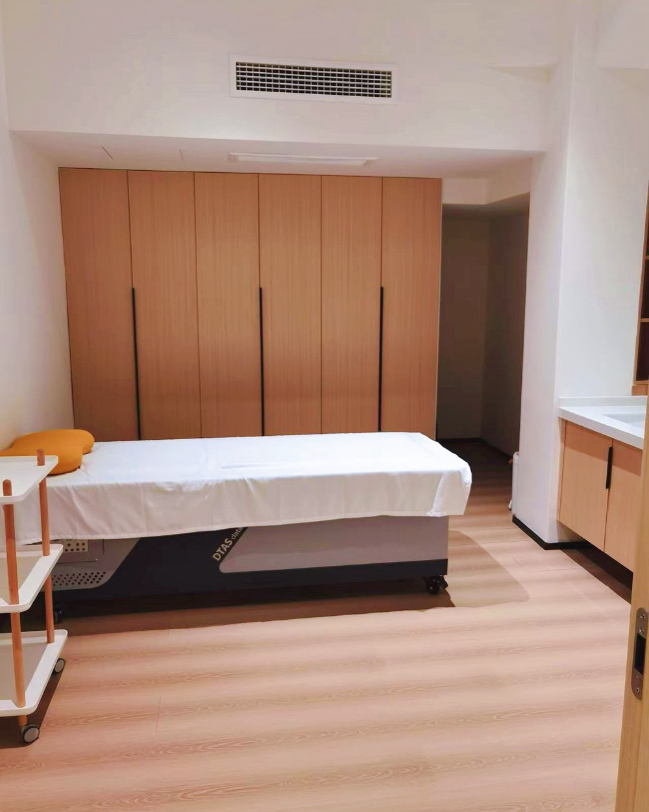

This page sets out how our senior practitioner works, what sessions in person involve, and who we turn away. It does not carry a price or a duration. Those are decided by your Observation Reading, because quoting either in advance would be a guess.
They are called the four examinations, and they are close to two thousand years old. Each one gathers something the others cannot. A physician who has time uses all four, then reconciles what they disagree about, and it is usually in that disagreement that the useful information sits.
Complexion, the set of the face, the way you hold yourself, and the tongue: its body, coating, moisture and edges. The tongue is examined in daylight, not under a screen.
The quality of the voice, the pattern of the breath, a cough's dryness or looseness. In classical practice this examination also covers odour, which patients rarely think to report.
Sleep, appetite, temperature, thirst, digestion, energy through the day, menstrual history, and what has already been tried. This is the examination most often cut for time, and the most expensive to cut.
The abdomen, the channels, and the pulse, read at three positions on each wrist, at three depths. Six positions in total. This is the examination that takes the longest to learn.
Pulse reading is not one reading. The physician places three fingers along the radial artery of each wrist and reads each position separately, at a light touch and again at a deep one. The middle finger is located first, against the small bone at the wrist, and everything else is measured from there.
Nearest the hand. In the classical scheme this position is associated with the upper body — the chest and head.
Found against the small bone at the wrist, the 高骨. Associated with the middle of the body, where digestion sits.
Furthest from the hand. Associated with the lower body, and in classical theory with a person's underlying reserves.
This is a description of a traditional examination method and the classical scheme it follows. It is not a diagnostic claim, and pulse reading is not a substitute for medical investigation.
Our senior practitioner works with four things: her hands, needles, scraping and moxa. The manual technique is the one she is known for, a classical method long out of common practice and unusual in how little pressure it uses, but it is not the whole of what a session contains. Which of the four she would use, and in what proportion, is decided by your reading and told to you before you commit.
It does not treat the place that hurts. The attention is on the whole, on the movement of qi and blood, and on the zangfu organs the classical texts organise the body around, rather than on the site of the complaint. Work proceeds in layers, and slowly.
Practitioners trained in more forceful methods tend to find the manual work strange to watch. There is very little to see. The hand moves the way cloud drifts, and the work goes layer by layer rather than straight at the thing.
The image she uses for it is Zhuangzi's cook, who after nineteen years had never blunted his blade: he found the spaces that were already there and let the edge pass through them. 以无厚入有间, entering the gap with something that has no thickness. The attention is on the whole shape rather than the local part.
大速若迟，厚積方馳，守徐乃疾
Great speed appears slow. Gather deeply, then travel. Hold to the unhurried, and that is quick.
Those lines are from the description of the method itself, and they are the honest summary. This is not an approach that produces something to feel on the first afternoon, and we would be wary of anyone who promised you it was.

Her own rooms · China
Our senior practitioner does not publish her photograph. She works independently of our partner clinic, and does not diagnose.
Three of these four break the skin, mark it, or use heat. None of it is dramatic, and none of it is a massage either. You should know which you are agreeing to before you book a flight rather than after.
None of these is automatically a no. All of them change the answer, and we would rather know at the intake than on the day.
Needling and scraping both matter here, and this is the one most often left off a form.
It changes which points are used and rules some out entirely.
Tell us the make if you know it.
Heat is judged partly by what you can feel, so this changes how moxa is used.
Scraping and moxa are worked around it, not over it.
Worth saying plainly. The work can be weighted away from them, and it is better to know before you travel.
Where you would wait · her own rooms, China
Treatment is charged by the session, not as a package, and the number of sessions is a clinical judgement rather than a menu choice. Quoting a figure before you have been read would mean quoting for work nobody has assessed yet.
Your Observation Reading states how many sessions are indicated and what they would cost, in writing, before you commit to anything. If you go ahead, the £850 is credited in full against that.
Decided from your reading. Sessions run on weekdays, one per day.
Follows from the number of sessions, not the other way round.
Interpreter hours, and whether a companion travels with you.
Arranged to your preference, and the largest single variable.
We would rather lose the enquiry than take someone this cannot help. Every programme begins with a consultation, and a meaningful number of those end with us saying no.
Tell us what has been going on and what you have already tried. We will arrange a call, and be straight with you about whether this is the right thing — including when it isn't.
Request a consultation